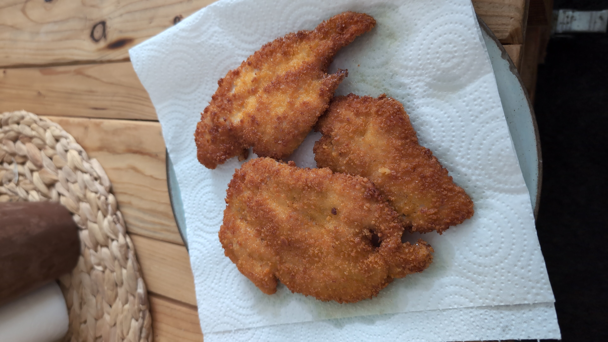

שוברים את הביצים לקערה ומערבבים היטב יחד עם התבלינים
שופכים את פירורי הלחם לקערה נפרדת
טובלים את החזה עוף ברוטב ואז בפירורי לחם ואז מעבירים למחבת על אש בינונית-גבוהה
הערות:
אפשר להכין מראש ולשים במקרר שיספוג את הטעם (שניצל בביצה ותבלינים ללא פירורי לחם)
אפשר לייבש את החזה עוף עם נייר סופג לפני הטבילה בביצה שידבק יותר טוב
זמן הכנה: 30 דקות
זמן המתנה: ללא

רשימת מצרכים:
2 ביצים
חצי כפית מלחקצת פלפל שחור
רבע כפית כמון
רבע כפית כורכום - אם רוצים
פירורי לחם (עדיף של פירורית זהב)
חזה עוף
“Cooking is like painting or writing a song. Just as there are only so many notes or colors, there are only so many flavors - it’s how you combine them that sets you apart.”